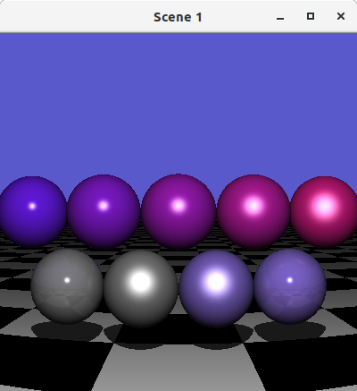
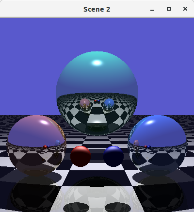
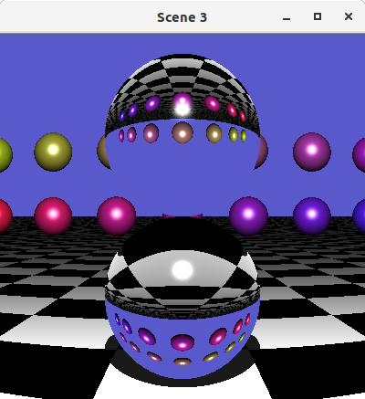
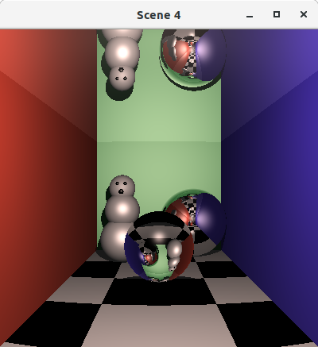

This is a CPU-bound raytracer that I created for the final project of my computer graphics class in university. In retrospect, it seems like we were just assigned Ray Tracing in One Weekend, but I think that it could be fun to revisit this project and try out some hardware acceleration (eg. using CUDA). I'll add that endeavor here if I get around to trying it out.
Code is available on Github.
For the assignment, we had to create four scenes out of geometric primitives (sphere, plane, etc.) that showed off our Phong shading/materials and features like reflection and refraction. The images below were the four scenes that I submitted.
   